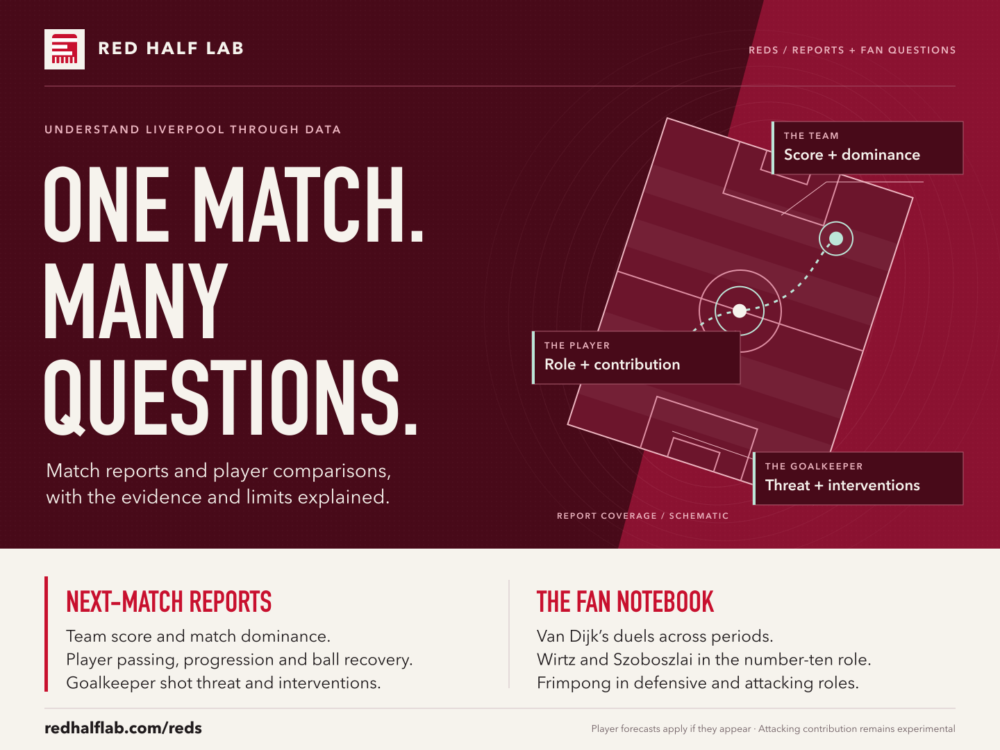

Match reports.
Team, player and goalkeeper reports for Liverpool’s next Premier League match.

The next league match
Team reports cover the score, result and match dominance. Player reports look at passing, progression and regaining possession. Goalkeeper reports cover shot threat and interventions around the box.
Player forecasts are conditional on the player appearing.
Read the REDS reportsThe fan notebook
How do Van Dijk’s duels compare across periods? What changes when Frimpong switches roles? The notebook explores these questions alongside Wirtz and Szoboszlai’s work as number tens.
Open the notebookExplore the match data
Match centre
Choose a fixture to see its pre-match picks and results.
Player trends
Follow one player across fixtures.
Goalkeepers
Review expected and observed goals prevented.